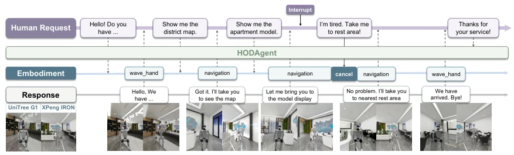
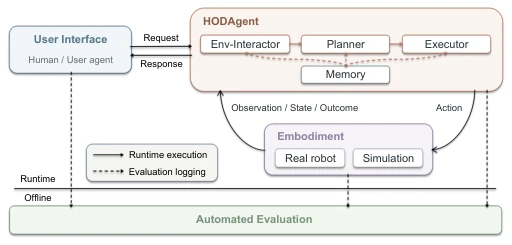
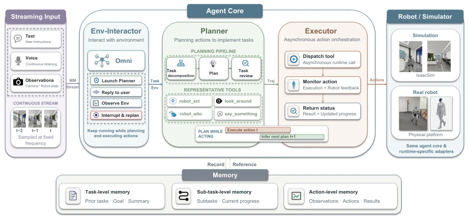
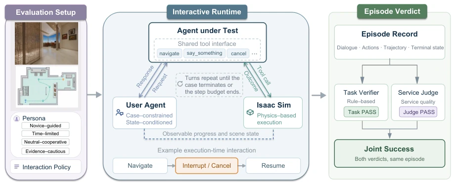
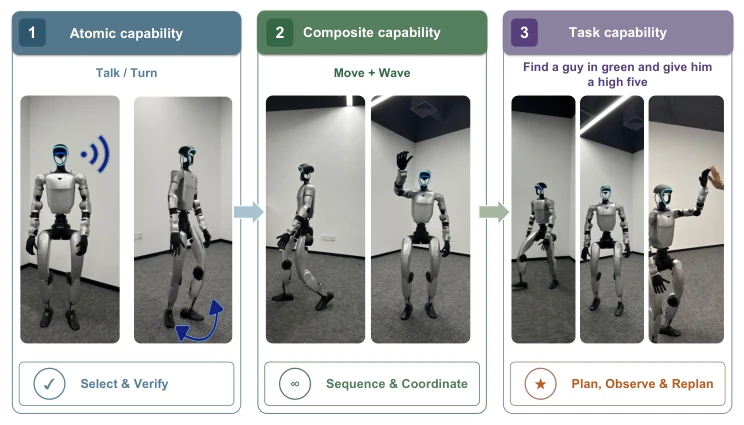
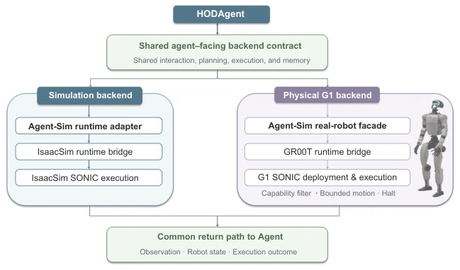
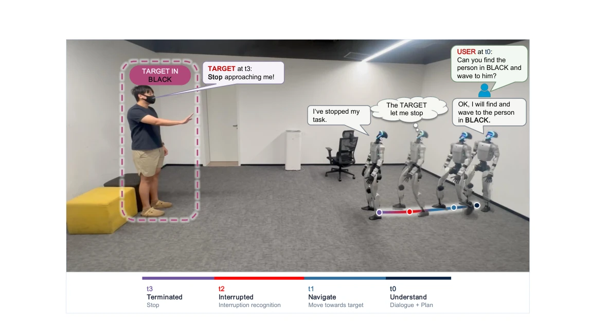
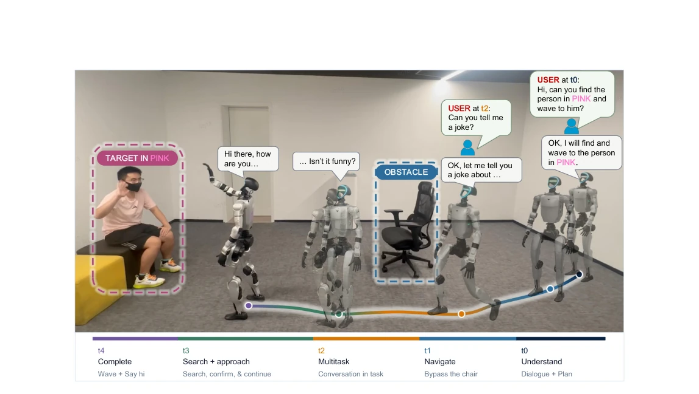

This paper adds another spark to the embodied intelligence community. XPENG did not pull any empty tricks this time, directly developing an HODAgent system. The core selling point is clear: robots should not only know how to work, but also know how to 'listen to advice'. When users suddenly change routes during navigation, it must be able to stop, change, and remember where it was before. Architecturally, it implements a semi-duplex (semi-duplex) mechanism, decoupling interaction, planning, execution, and memory, attempting to solve the pain point of traditional end-to-end models being a 'one-off deal'. However, do not get too excited too soon; this system is currently mainly System-2, with underlying control still relying on the GR00T/SONIC set, still a distance away from a true 'autonomous brain'. Physical experiments run on Unitree G1, success rates look okay, but the 63.3% full task pass rate also exposes pitfalls in long-horizon tasks. Most interestingly, the evaluation framework not only looks at whether the task succeeded but also at 'service attitude' (Service Judge), which counts as adding an 'emotional intelligence' assessment for robots. Overall, it is a decent middleware attempt, but still falls short of general service robots.
Existing service robot research mostly focuses on single tasks or fixed goals; once users interrupt mid-way or change requirements, the system becomes confused. For example, SayCan [18] and RT-2 [19] can execute instructions but lack continuous state management for dynamic service scenarios. Digital Agent systems like ReAct [20] have reasoning capabilities but do not understand the execution semantics of the physical world. This paper aims to solve the problem of 'embodied interaction continuity under service scenarios'. There are three specific pain points: first, lack of real-time understanding of executing intent (Grounded intent); second, inability to maintain context after task interruption (Task continuity); third, inability to verify task completion based on physical evidence (Outcome-grounded closure). The authors believe that true service robots cannot just execute preset actions, but must maintain perception of the environment and response to user requests during physical execution, forming a closed-loop service episode (service episode).

Figure 1: Illustration of on-demand human–humanoid interaction in simulation. When the user changes the destination during navigation, the agent revises the active behavior while retaining the valid context and progress of the interaction.
HODAgent adopts a semi-duplex (semi-duplex) architecture, core is four decoupled modules: Env-Interactor, Planner, Executor, and Hierarchical Memory. In terms of data flow, user requests enter Env-Interactor, combining visual observations and task status to judge whether it is chat or task. If it is a task, Planner is responsible for decomposing sub-tasks and generating tool sequences, Executor is responsible for asynchronous execution and feedback status, Memory maintains task-level, sub-task-level, and action-level historical context. Innovations lie in: 1. Semi-duplex interaction: allows robots to listen continuously while moving, supporting online interruption and re-planning (planning-while-acting). 2. Embodiment-agnostic interface: shields differences between simulation (Isaac Sim) and real machine (Unitree G1) through Adapter layer, unifying observation and execution contracts. 3. Hierarchical memory: ensures correct progress can be restored after interruption, avoiding context loss. The whole system belongs to System-2 level, responsible for high-level decision making, underlying skills (System-1) and hardware control (System-0) are encapsulated under the interface, guaranteeing logical generality.

Figure 2: System overview. A human user in deployment, or a User Agent during controlled simulation, interacts with HODAGENT through the User Interface. The agent sends actions to either a physical robot or a simulator and receives observations, state, and execution outcomes.

Figure 3: Architecture of HODAGENT. The semi-duplex streaming embodied agent consists of four independently scheduled modules: the Env-Interactor handles continuous multimodal interaction, the Planner decomposes tasks and generates action plans, the Executor carries them out through shared simu- lation and real-robot interfaces, and these three modules coordinate through hierarchical Memory. Their on-demand coordination supports online interruption, closed-loop replanning, and planning–execution overlap.
Experiments are divided into simulation and real machine parts. Simulation based on 164 cases, covering 22 indoor scenes, using User Agent to simulate different user behaviors (such as Novice-guided). Baseline comparison ReAct [20], HODAgent is higher by 9.8 and 18.9 percentage points respectively on Joint Success (based on Qwen3.6-35B and 27B). Real machine deployed on Unitree G1, atomic capability pass rate 92%, composite capability 72%, full task 63.3%. Additionally verified general planning capabilities on EmbodiedBench and VIGIL. Evaluation metrics not only look at task completion (Task PASS), but also service quality and interaction rationality (Judge PASS), this 'double-blind' evaluation is more rigorous than simply looking at trajectories. Results prove that this architecture is superior to traditional Agent loops in maintaining task continuity and responsiveness.

Figure 4: Interactive embodied-agent evaluation in simulation. Left: each evaluation case fixes the scene, ordered goals, User Agent persona, and permitted interaction policy. Middle: the User Agent exchanges dialogue turns with the agent under test, while Isaac Sim executes embodied skills and exposes observable progress and scene state; the highlighted sequence illustrates an optional execution-time interruption. Right: dialogue, actions, trajectory, and terminal state are aligned in one episode record and assessed independently by a rule–based Task Verifier and a Service Judge. Joint Success requires both verdicts to pass for the same episode.

Figure 6: Progressive physical-robot evaluation. Atomic trials isolate individual interaction and motion capabilities, as illustrated by speaking or turning. Composite trials require capabilities to be sequenced, such as moving forward and then waving. Task trials assess a goal-directed assistance episode that combines visual grounding, locomotion, and whole-body interaction, as illustrated by finding a person in green and giving that person a high five.
其他图片Other Figures

Figure 5: Integration of the shared agent with simulation and the physical G1. HODAGENT selects actions and interprets feedback through a common embodiment interface. The simulation adapter executes these actions in Isaac Sim, whereas the G1 adapter connects them to the GR00T/SONIC control stack. Camera observations, robot state, and execution outcomes are converted back into the representation used by the same agent. Platform-specific capability and safety constraints are enforced below the shared agent.

Figure 7: A case of human–initiated termination during an active approach. The episode proceeds from instruction grounding at t0 through target–directed navigation at t1, recognition of the stop request at t2, and task termination at t3.

Figure 8: Illustration of long-horizon interaction with concurrent requests. The episode proceeds from instruction grounding at t0 through obstacle-aware navigation at t1, concurrent conversation at t2, target search and a renewed approach at t3, and the final wave and greeting at t4. Overlaid robot poses and trajectory segments show that the original task remains active across dialogue and replanning.